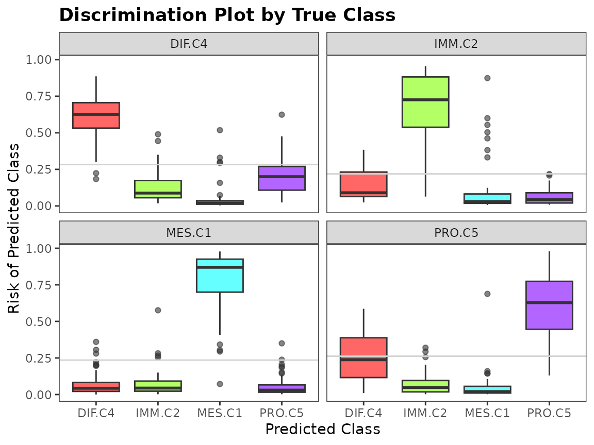
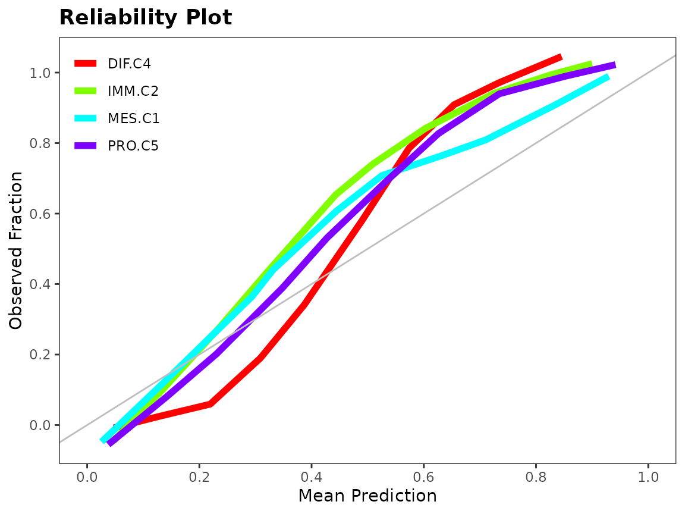
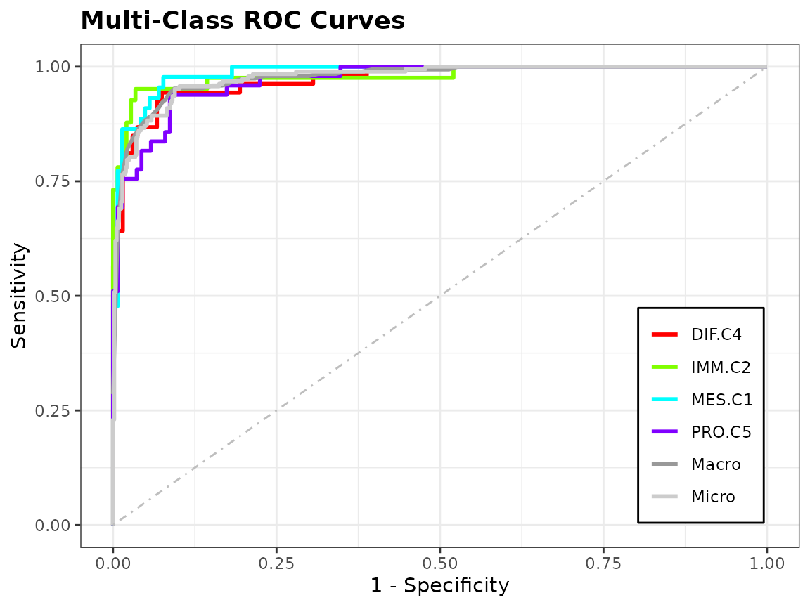

Ensemble Classification using `splendid`
Source:vignettes/ensemble_classification.Rmd
ensemble_classification.RmdIntroduction
Supervised learning is the branch of statistical learning where we
construct a predictive model with the goal of regression or
classification. The splendid package focuses on
classification with an ensemble framework: many classification
algorithms are used, and prediction is done across bootstrap replicates
of the data. An ensemble classifier is built from the best performing
algorithms according to evaluation measures. No single classifier always
performs the best for every data set that exists, so there is increasing
utility to come up with ensemble classifiers. The objective is to use
this classifier to obtain highly accurate predictions in independent
data sets for the purposes of diagnostic identification. In genomic
studies for example, one might be interested in using the class labels
of a cancer subtype in one cohort to predict the subtypes in an
independent cohort.
splendid is currently only available on GitHub (the
second line below will be uncommented once the repository becomes
public).
Overview
The main function of splendid is
splendid(), and the usage is intuitive:
-
data: your rectangular data in standard form (rows as samples/observations, columns as variables/features) -
class: the true/reference class labels with length equal to the number of samples -
algorithms: character vector of classification algorithms -
n: number of bootstrap replicates to generate as training sets. Test sets are taken from the out-of-bag samples (OOB). -
seed_boot: seed for reproducibility in bootstrapping training sets for model generation -
seed_samp: seed for reproducibility in subsampling training sets for model generation -
seed_alg: seed for reproducibility for algorithms with a random training aspect (e.g. random forests) -
convert: whether to convert categorical predictors to dummy variables -
rfe: whether to use Recursive Feature Elimination (RFE) for feature selection. Only implemented for certain algorithms. -
ova: whether to run one-vs-all versions for each algorithm (e.g. class 1 vs. not class 1, class 2 vs. not class 2, etc.) -
standardize: whether to standardize the training set before classification and the test set (using training set centerings & scalings) during prediction -
sampling: the subsampling method is either up-sampling, down-sampling, or SMOTE (hybrid method) -
stratify: whether to use stratified bootstrap sampling to ensure that the proportion of classes in the bootstrap sample is the same as the original data -
plus: whether to calculate the .632+ or .632 estimator for the log loss error rate -
threshold: predicted probabilities below this value are classified as “unclassified” instead of imposing one of the labels fromclass -
trees: number of trees/iterations to use in random forest/boosting models, respectively -
tune: whether to tune hyperparameters in pertinent algorithms -
top: how many of the top performing algorithms are chosen for the final ensemble? -
seed_rank: random seed used for reproducibility in rank aggregation of ensemble algorithms -
sequential: whether to run the sequential ensemble
class <- attr(hgsc, "class.true")
table(class)
#> class
#> DIF.C4 IMM.C2 MES.C1 PRO.C5
#> 135 107 109 138
sl_result <- splendid(data = hgsc, class = class, n = 2,
algorithms = c("slda", "knn", "svm"), rfe = FALSE)The resulting object is a list with the following elements:
-
modelsgives the model fits for each of the algorithms used. The fits are themselves nested based on the number of bootstrap replicates. -
predshas the same hierarchical structure asmodels, except the metadata consists of the predicted class labels. -
evalsis a list of data frames showing evaluation metrics for each algorithm. Rows are metrics and columns are bootstrap replicates. More details on this element will be provided later. -
bestsis a vector that shows the best-performing algorithm for each bootstrapped replicate of the data, chosen by rank aggregation. -
ensemble_algstallies the algorithm frequencies inbests, returning the top (3, by default) algorithms chosen. -
ensembleis a list of model fits for each of the algorithms inensemble_algs, fit on the full data.
str(sl_result, max.level = 2)
#> List of 8
#> $ models :List of 3
#> ..$ slda:List of 2
#> ..$ knn :List of 2
#> ..$ svm :List of 2
#> $ preds :List of 3
#> ..$ slda:List of 2
#> ..$ knn :List of 2
#> ..$ svm :List of 2
#> $ evals :List of 3
#> ..$ slda:'data.frame': 48 obs. of 2 variables:
#> .. ..- attr(*, "err_632plus")= num 1.89
#> ..$ knn :'data.frame': 48 obs. of 2 variables:
#> .. ..- attr(*, "err_632plus")= num 1.42
#> ..$ svm :'data.frame': 48 obs. of 2 variables:
#> .. ..- attr(*, "err_632plus")= num 0.209
#> $ bests : Named chr [1:2] "svm" "svm"
#> ..- attr(*, "names")= chr [1:2] "1" "2"
#> $ ensemble_algs: chr "svm"
#> $ ensemble_mods:List of 1
#> ..$ :List of 30
#> .. ..- attr(*, "class")= chr "svm"
#> $ seq_mods : NULL
#> $ seq_preds : NULLClassification
The first step in the splendid pipeline is
classification. Given explanatory data and a reference response of
classes, we wish to build a classifier that can accurately predict class
representation in a separate validation data set. To avoid overfitting,
we split the given data into a training set and test set. The training
set is constructed by taking a random sample with replacement of all
samples. The test set is comprised of all samples which are not included
in the corresponding training set, also known as an OOB sample. This is
a simple bootstrap resampling scheme, which we replicate a sufficient
number of times to capture sampling variability.
Algorithms
There exist a vast number of classification algorithms. Those
currently in splendid are:
- Prediction Analysis for Microarrays (
"pam") - Support Vector Machines using a Radial-Basis
Kernel(
"svm") - Random Forests (
"rf") - Linear Discriminant Analysis (
"lda") - Shrinkage Linear Discriminant Analysis
(
"slda")1 - Shrinkage Diagonal Discriminant Analysis
(
"sdda")1 - Multinomial Logistic Regression using
- Generalized Linear Model with no penalization
(
"mlr_glm")2 - GLM with LASSO penalty (
"mlr_lasso")2 - GLM with ridge penalty (
"mlr_ridge")2 - Neural Networks (
"mlr_nnet")
- Generalized Linear Model with no penalization
(
- Neural Networks with One Hidden Layer (
"nnet") - Naive Bayes (
"nbayes") - AdaBoost.m1 (
"adaboost_m1") - Extreme Gradient Boosting using Decision Trees
(
"xgboost") - K-Nearest Neighbours (
"knn")
These algorithms are implemented in
classification().
Hyperparameters and other Details
Certain functions have hyperparameters that need to be tuned in order
to select the best model before prediction. We use a grid search on a
pre-specified range of the hyperparameters and choose the optimal values
using caret::train().
The ranges for the tuning parameters are:
-
svm-
sigma:1 / ncol(data) * 2 ^ (0:4) -
C: 1, 2, 4, 8, 16
-
-
rf-
mtry: 1, 4, 9, 16, 25
-
-
adaboost_m1-
mfinal: 1, 2, 3, 4, 5 -
maxdepth: 1, 2, 3, 4, 5 -
coeflearn: “Breiman”, “Freund”, “Zhu”
-
We use e1071::tune() for neural network parameters. The
ranges are:
-
nnet-
size: 1, 2, 3, 4, 5 -
decay: 0, 0.125, 0.25, 0.375, 0.5
-
Some algorithms have certain properties that require data manipulations before classification.
-
sldaandsdda: These shrinkage discriminant analysis algorithms estimate the regularization parameters analytically without having to solve using resampling methods. -
multinom_nnetandnnet: We increase the maximum number of allowable weights to a sufficiently large number to avoid ill-fitted models. -
knn: Since K-Nearest Neighbours is a non-parametric method, there is no model object upon which predictions are made, and predicted classes are directly found. To obtain prediction probabilities by class, we use a distance matrix between the training and test set samples. -
pam: a uniform prior is used in the training step. -
xgboost: the objective function is soft probability, and the evaluation metric is log loss.
Feature Selection
We use Recursive Feature Elimination (RFE)3 on
lda, rf, svm, and
adaboost_m1 to reduce the dimensionality before
classification. In svm, we do this before tuning because of
the computational complexity. However, we can embed this feature
selection within the tuning step for the other three algorithms. Set
rfe = TRUE in splendid to use feature
selection.
One limitation of RFE is that an a priori set of feature subset sizes
need to be specified, determining the search space for the algorithm. By
default, we set the sizes parameter to be every 5 integers
from 0 up to one-half of the smallest class size. Recall the class
sizes:
table(class)
#> class
#> DIF.C4 IMM.C2 MES.C1 PRO.C5
#> 135 107 109 138We tell RFE to search for the best models with 5, 10, …, 50 features. Cross-validation with 2 folds is used in the algorithm.
Prediction
There is a different prediction method for each classifier, since
they are all imported from an external package. The
prediction() function calls each method based on the class
of the model output from classification().
prediction() also performs some manipulations so that the
results all have the same data structure: unnamed factors, with labels
given in the same order as the true class labels.
The method for "pam" is an exception: the output from
prediction() not only has the predicted class labels, but
also the cross-validated threshold value calculated from the training
set to use in prediction on the test set, named delta.
str(sl_result$preds, max.level = 2, list.len = 2)
#> List of 3
#> $ slda:List of 2
#> ..$ : Factor w/ 4 levels "DIF.C4","IMM.C2",..: 4 3 2 1 1 1 1 1 1 4 ...
#> .. ..- attr(*, "prob")= num [1:178, 1:4] 0 0 0.0037 1 1 ...
#> .. .. ..- attr(*, "dimnames")=List of 2
#> .. ..- attr(*, "class.true")= Factor w/ 4 levels "DIF.C4","IMM.C2",..: 4 3 2 1 1 1 4 1 2 4 ...
#> .. ..- attr(*, "class.thres")= Factor w/ 5 levels "DIF.C4","IMM.C2",..: 4 3 2 1 1 1 1 1 1 4 ...
#> .. ..- attr(*, "class.prop")= num 1
#> ..$ : Factor w/ 4 levels "DIF.C4","IMM.C2",..: 4 3 1 2 4 1 1 1 1 1 ...
#> .. ..- attr(*, "prob")= num [1:161, 1:4] 0.002975 0.000202 0.999009 0.236365 0 ...
#> .. .. ..- attr(*, "dimnames")=List of 2
#> .. ..- attr(*, "class.true")= Factor w/ 4 levels "DIF.C4","IMM.C2",..: 4 3 4 2 4 4 1 1 1 1 ...
#> .. ..- attr(*, "class.thres")= Factor w/ 5 levels "DIF.C4","IMM.C2",..: 4 3 1 2 4 1 1 1 1 1 ...
#> .. ..- attr(*, "class.prop")= num 1
#> $ knn :List of 2
#> ..$ : Factor w/ 4 levels "DIF.C4","IMM.C2",..: 3 3 2 1 1 4 4 1 2 4 ...
#> .. ..- attr(*, "prob")= num [1:178, 1:4] 0.2 0 0 1 1 0.4 0 1 0.4 0 ...
#> .. .. ..- attr(*, "dimnames")=List of 2
#> .. ..- attr(*, "class.true")= Factor w/ 4 levels "DIF.C4","IMM.C2",..: 4 3 2 1 1 1 4 1 2 4 ...
#> .. ..- attr(*, "class.thres")= Factor w/ 5 levels "DIF.C4","IMM.C2",..: 3 3 2 1 1 4 4 1 2 4 ...
#> .. ..- attr(*, "class.prop")= num 1
#> ..$ : Factor w/ 4 levels "DIF.C4","IMM.C2",..: 1 3 1 2 4 1 1 1 2 2 ...
#> .. ..- attr(*, "prob")= num [1:161, 1:4] 0.6 0.167 0.667 0 0 ...
#> .. .. ..- attr(*, "dimnames")=List of 2
#> .. ..- attr(*, "class.true")= Factor w/ 4 levels "DIF.C4","IMM.C2",..: 4 3 4 2 4 4 1 1 1 1 ...
#> .. ..- attr(*, "class.thres")= Factor w/ 5 levels "DIF.C4","IMM.C2",..: 1 3 1 2 4 1 1 1 1 2 ...
#> .. ..- attr(*, "class.prop")= num 1
#> [list output truncated]Attributes
Note that each predicted class has an attribute that shows the class
probabilities in a matrix. We ensure that the class probabilities for
every sample sum to one by making a small adjustment to one of the
classes depending on whether the probability was over or under one.
These matrices are useful to compute evaluation measures and generate
discriminating graphs that we detail below, and is stored in
attr(*, "prob").
To obtain better performance under evaluation metrics, we may want to
exclude samples which have a maximum class probability below a
threshold. For example, we may only compare the true test labels with
the corresponding OOB samples where the winning class has a probability
at least 50%. Samples below this threshold are labelled as
"unclassified". If the threshold results in all samples
being unclassified, then we use the unfiltered, original predicted
labels for evaluation. This object is stored in
attr(*, "class.thres").
The final attribute of a prediction object is stored
attr(*, "class.prop"), showing the proportion of classified
cases. This value is inversely proportional to the
threshold setting.
Evaluation
Metrics
Evaluation measures are important because they tell us the prediction
performance of a classifier. The table below shows all the measures for
svm, for two bootstrap replicates. The
logloss, auc and pdi measures
make use of the prediction probabilities, whereas the rest are computed
from the multiclass confusion matrix of reference and predicted class
labels.
| 1 | 2 | |
|---|---|---|
| logloss | 0.2947182 | 0.2540596 |
| auc | 0.9858863 | 0.9899632 |
| pdi | 0.9619136 | 0.9731234 |
| accuracy | 0.8876404 | 0.9378882 |
| macro_ppv | 0.8882541 | 0.9354862 |
| macro_npv | 0.9625091 | 0.9792366 |
| macro_sensitivity | 0.8875489 | 0.9354862 |
| macro_specificity | 0.9624474 | 0.9792366 |
| macro_f1 | 0.8877453 | 0.9353769 |
| mcc | 0.8500927 | 0.9161892 |
| kappa | 0.8499853 | 0.9161415 |
| gmean | 0.8871099 | 0.9353169 |
| accuracy.DIF.C4 | 0.9382022 | 0.9627329 |
| accuracy.IMM.C2 | 0.9382022 | 0.9689441 |
| accuracy.MES.C1 | 0.9662921 | 0.9689441 |
| accuracy.PRO.C5 | 0.9325843 | 0.9751553 |
| ppv.DIF.C4 | 0.8936170 | 0.9361702 |
| ppv.IMM.C2 | 0.8750000 | 0.9090909 |
| ppv.MES.C1 | 0.9302326 | 0.9375000 |
| ppv.PRO.C5 | 0.8541667 | 0.9591837 |
| npv.DIF.C4 | 0.9541985 | 0.9736842 |
| npv.IMM.C2 | 0.9565217 | 0.9843750 |
| npv.MES.C1 | 0.9777778 | 0.9767442 |
| npv.PRO.C5 | 0.9615385 | 0.9821429 |
| sensitivity.DIF.C4 | 0.8750000 | 0.9361702 |
| sensitivity.IMM.C2 | 0.8536585 | 0.9375000 |
| sensitivity.MES.C1 | 0.9302326 | 0.9090909 |
| sensitivity.PRO.C5 | 0.8913043 | 0.9591837 |
| specificity.DIF.C4 | 0.9615385 | 0.9736842 |
| specificity.IMM.C2 | 0.9635036 | 0.9767442 |
| specificity.MES.C1 | 0.9777778 | 0.9843750 |
| specificity.PRO.C5 | 0.9469697 | 0.9821429 |
| f1.DIF.C4 | 0.8842105 | 0.9361702 |
| f1.IMM.C2 | 0.8641975 | 0.9230769 |
| f1.MES.C1 | 0.9302326 | 0.9230769 |
| f1.PRO.C5 | 0.8723404 | 0.9591837 |
| mcc.DIF.C4 | 0.8421581 | 0.9098544 |
| mcc.IMM.C2 | 0.8243107 | 0.9037953 |
| mcc.MES.C1 | 0.9080103 | 0.9037953 |
| mcc.PRO.C5 | 0.8269126 | 0.9413265 |
| kappa.DIF.C4 | 0.8420713 | 0.9098544 |
| kappa.IMM.C2 | 0.8242054 | 0.9036274 |
| kappa.MES.C1 | 0.9080103 | 0.9036274 |
| kappa.PRO.C5 | 0.8265671 | 0.9413265 |
| gmean.DIF.C4 | 0.9172492 | 0.9547430 |
| gmean.IMM.C2 | 0.9069196 | 0.9569209 |
| gmean.MES.C1 | 0.9537089 | 0.9459843 |
| gmean.PRO.C5 | 0.9187155 | 0.9705954 |
-
logloss: Multiclass log loss should be minimized -
auc: Area Under the Curve compares trade-off between sensitivity and specificity -
pdi: Polytomous Discrimination Index -
accuracy: number of correctly classified samples out of all samples -
ppv: positive predictive value, also known as precision -
npv: negative predictive value -
sensitivity: also known as recall -
specificity: also known as selectivity -
f1: balanced metric between precision and recall -
mcc: Matthew’s correlation coefficient
Note that in the multiclass case, we have variants for some of the
measures listed above, depending on how we are looking at the data. A
macro-averaged metric calculates said metric on each of the
one-vs-all confusion matrices and then takes the mean. A
micro-averaged metric is calculated on the element-wise sum
of all one-vs-all confusion matrices.
Hence, there are macro_ppv, macro_npv,
macro_sensitivity, macro_specificity, and
macro_f1 macro-averaged metrics, and micro_mcc
as the “only” micro-averaged metric. It turns out that
accuracy is mathematically equivalent to micro-averaged
PPV, sensitivity, and F1-score, so we don’t redundantly add those to the
list. Furthermore, calculating mcc in a macro-averaged way
is not recommended, so we use it on the full confusion matrix.
Class-specific measures fill in the rest of the matrix, labelled with
the naming scheme metric.class.
The .632 estimator are implemented for the multiclass log loss
function. This error estimate aims to make a compromise between an
overbiased prediction like the leave-one-out bootstrap error with an
underbiased prediction like the training (or apparent) error. If we set
plus = TRUE in splendid() (default), one can
calculate the .632+ estimator, an improvement over the .632 estimator
that takes into account the amount of overfitting.5 The value
is stored as an attribute in the evaluation object:
Plots
To assess the performance of a classifier, we can look at a discriminating plot and reliability plot.
data(hgsc)
class <- factor(attr(hgsc, "class.true"))
set.seed(1)
training.id <- sample(seq_along(class), replace = TRUE)
test.id <- which(!seq_along(class) %in% training.id)
mod <- classification(hgsc[training.id, ], class[training.id], "rf")
pred <- prediction(mod, hgsc, test.id, class = class)
evals <- evaluation(class[test.id], pred, plot = TRUE)
Ensemble Construction
For each bootstrap replicate training set, we want to find the top performing classifier. We use Rank Aggregation with the Genetic Algorithm to choose the top algorithm by comparing across evaluation metrics4. In the case of log loss, we need to first invert its value since it its objective function is minimization. Class-specific measures are not included in the rank aggregation because they are interdependent. For example, a sample with a true class of “A” should not be treated differently depending on whether it was misclassified into “B” or “C”.
After obtaining the list of top classifiers for each bootstrap
replicate, we sort them by decreasing frequency and keep the top 3 to
use in the ensemble. The ensemble_mods output of
splendid is a list of models fit on the full data for the
top classifiers.
References
- Ahdesmäki, Miika, and Korbinian Strimmer. “Feature selection in omics prediction problems using cat scores and false nondiscovery rate control.” The Annals of Applied Statistics 4.1 (2010): 503-519.
- https://web.stanford.edu/~hastie/glmnet/glmnet_beta.html
- https://topepo.github.io/caret/recursive-feature-elimination.html
- Pihur, Vasyl, Susmita Datta, and Somnath Datta. “RankAggreg, an R package for weighted rank aggregation.” BMC bioinformatics 10.1 (2009): 62.
- Efron, Bradley and Tibshirani, Robert (1997), “Improvements on Cross-Validation: The .632+ Bootstrap Method,” Journal of American Statistical Association, 92, 438, 548-560.